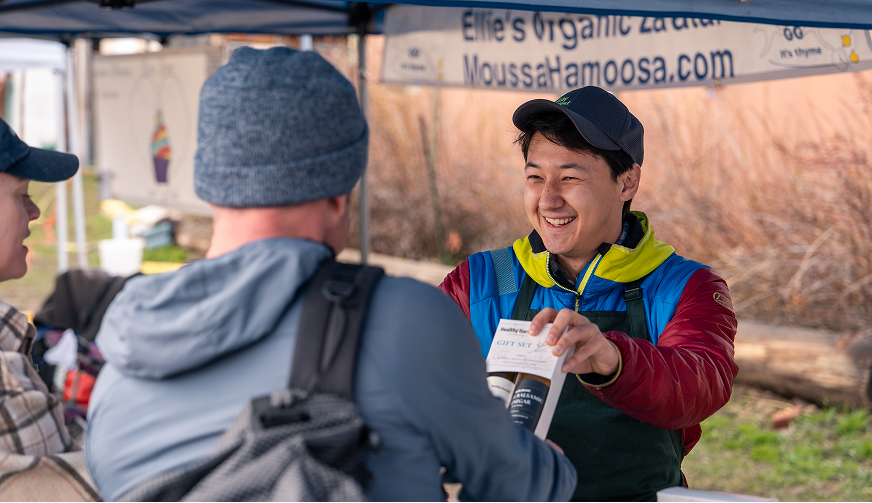
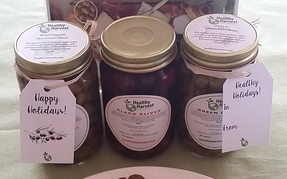
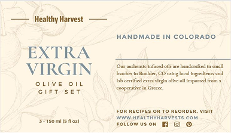
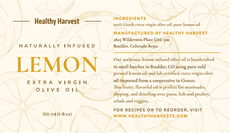
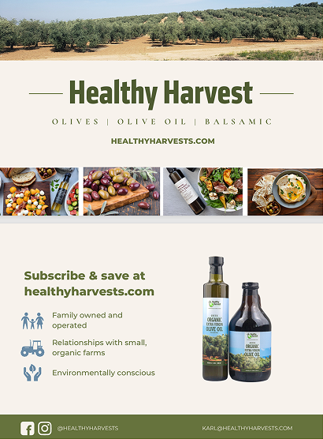
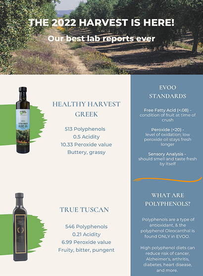
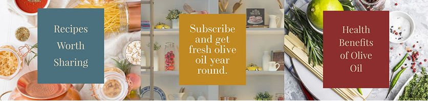

Healthy Harvest started the way most small food brands do — a folding table at a farmers market, an exquisitely crafted product, and a founder who was excellent at recipe development, not at marketing. Word of mouth and one-time taste tests built a cult following, but there was no way for a customer to buy again once the season ended.

Bar length scaled proportionally within each metric pair.
24% of online revenue is now from recurring subscriptions — up from 0% before the program launched. 35% generated from marketing emails.
Created a cohesive "Mediterranean summer" brand, including booth setup, digital and print assets. Originated the gift box line and infused oils (now top sellers), proposed a 64 oz growler format for the brand's sustainability promise.
Landing pages, product display templates, cross-sells and up-sells, reviews, navigation, and checkout — the infrastructure that made online revenue possible at all.
100+ blog articles, keyword and metadata audits, and earned features in Brit+Co and Foodgawker — all without a paid media budget.
A monthly newsletter at a 45% open rate, plus an abandoned-cart series that's recovered thousands of dollars a year in otherwise-lost sales.
Gave repeat customers a reason to stop reordering manually. It now accounts for 24% of all online revenue.






I'm currently taking on 1–2 retainer clients — small businesses that are great at what they do but don't have the time to run marketing themselves.
Let's chat